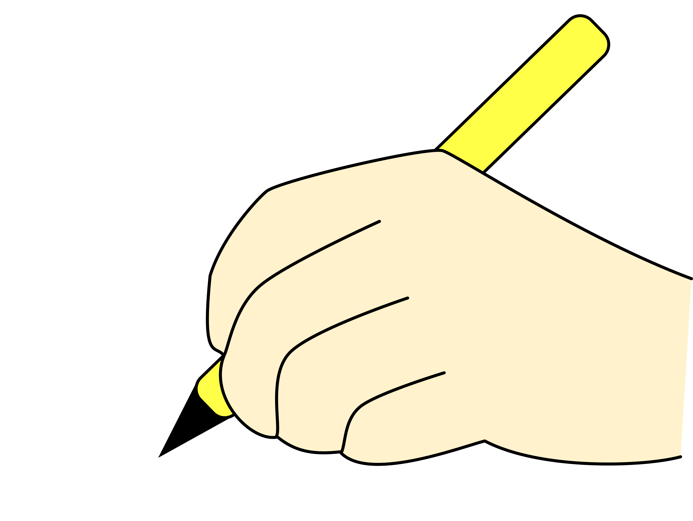

Copy Work | A Complete Guide to Teaching Children Through Writing

Copy work is one of the simplest and most effective educational activities for developing handwriting, spelling, reading, grammar, vocabulary, concentration, and written language skills. It requires very little equipment, can be adapted for almost any age or ability level, and can easily become part of a homeschool, classroom, tutoring, or language-learning routine.
In its simplest form, copy work means carefully copying a short piece of well-written text from a model.
A child may copy a word, sentence, poem, quotation, paragraph, verse, short story passage, vocabulary sentence, or other age-appropriate text.
Although the activity looks simple, good copy work involves much more than handwriting practice. When children copy carefully, they are observing how letters form words, how words form sentences, how punctuation works, and how ideas are expressed in writing.
This guide explains what copy work is, why it is useful, how to introduce it, what children should copy at different ages, how to structure a copy-work lesson, and how parents and teachers can create effective copy-work worksheets and activities.
What Is Copy Work?
Copy work is the practice of copying a written model accurately and neatly. For exampleA beginning writer might copy
➧ I see a cat.
An older child might copy
➧ The little bird flew from the tree and disappeared into the blue sky.
A more advanced student might copy a short paragraph from a story, informational text, poem, or other suitable source.
The goal is not simply to fill a page.
➧ Observe carefully
➧ Form letters correctly
➧ Recognize words
➧ Notice spelling patterns
➧ Understand spacing
➧ Use punctuation
➧ Develop handwriting fluency
➧ Pay attention to sentence structure
➧ Build concentration
➧ Become familiar with good written language
Copy work is therefore both a writing activity and a language-learning activity.
Why Is Copy Work Important?
Copy work can support several areas of a child's literacy development at the same time.1. It Develops Handwriting
Regular copying gives children repeated opportunities to practice forming letters.Children learn to pay attention to
➧ Letter formation
➧ Letter size
➧ Uppercase and lowercase letters
➧ Spacing
➧ Writing direction
➧ Word spacing
➧ Line placement
➧ Neatness
With consistent practice, handwriting can become more comfortable and automatic.
2. It Reinforces Spelling
Copy work exposes children to correctly spelled words.Instead of memorizing spelling rules only in isolation, children repeatedly see words used naturally in sentences.
For example
➧ The rabbit is running.
A child sees
➧ rabbit
➧ running
➧ double consonants
➧ spaces between words
➧ a capital letter
➧ a period
The child is learning spelling within meaningful language.
3. It Builds Vocabulary
Copy work can introduce children to new words.For example
➧ The enormous elephant walked slowly across the field.
The child may encounter
➧ enormous
➧ elephant
➧ slowly
➧ across
A teacher can briefly discuss unfamiliar vocabulary before or after the copying activity.
4. It Reinforces Grammar
Copying complete sentences helps children become familiar with correct sentence patterns.For example
➧ Where is the little puppy?
The child sees that a question begins with a capital letter and ends with a question mark.
Children naturally observe
➧ Capital letters
➧ Periods
➧ Question marks
➧ Exclamation marks
➧ Commas
➧ Apostrophes
➧ Verb forms
➧ Sentence structure
➧ Word order
5. It Supports Reading Development
Copy work and reading can complement each other.When children copy words they already understand, they repeatedly look at
➧ Letter patterns
➧ Word shapes
➧ Common words
➧ Phonics patterns
➧ Sentence structures
A copy-work activity can therefore reinforce words and patterns children encounter during reading lessons.
6. It Builds Concentration
Copying accurately requires attention.A child needs to look at the model, remember a small amount of text, write it, and check whether it matches.
This develops the habit of working carefully rather than rushing.
7. It Teaches Children to Notice Details
Copy work encourages children to notice small differences.For example
➧ The dog is big.
is different from
➧ The dog is Big.
The second sentence contains an unnecessary capital letter.
Copy work helps children become more aware of these details.
8. It Introduces Children to Good Writing
Children benefit from seeing examples of well-constructed sentences.Instead of asking them to create sophisticated sentences immediately, copy work allows them to first observe how good writing works.
Over time, children become familiar with
➧ Interesting vocabulary
➧ Sentence patterns
➧ Descriptive language
➧ Dialogue
➧ Paragraph structure
➧ Transitions
➧ Different writing styles
Copy work can therefore serve as a bridge from reading good writing to producing good writing.
Copy Work Is More Than Handwriting Practice
It is easy to think of copy work as simply➧ "Write this sentence."
But effective copy work can involve several stages.
Look
➧ The child carefully observes the model.
Read
➧ The child reads or listens to the sentence.
Think
➧ The child considers what the sentence means.
Copy
➧ The child reproduces the sentence accurately.
Check
➧ The child compares the copied sentence with the original.
Correct
➧ The child fixes any mistakes.
This makes copy work an active learning process rather than mindless writing.
What Age Should Children Start Copy Work?
Copy work can begin when children have developed enough fine-motor control to make basic marks and letters.However, the amount and difficulty should change with age.
Preschool
Preschool children generally need very short activities.Examples
➧ Tracing lines
➧ Tracing shapes
➧ Tracing letters
➧ Copying simple letters
➧ Copying their names
➧ Copying very short words
At this stage, the emphasis should be on enjoyment, pencil control, and familiarity with letters.
Kindergarten
Kindergarten children can begin copying➧ Letters
➧ Names
➧ CVC words
➧ Simple sight words
➧ Short phrases
➧ Very short sentences
Examples
➧ I see a cat.
➧ The sun is hot.
➧ I like apples.
The teacher or parent should provide an appropriately sized model with plenty of space.
Grade 1
First-grade students can gradually move toward complete sentences.Examples
➧ The little dog can run.
➧ We went to the park.
➧ My mother made a cake.
Copy work can reinforce phonics , sight words, punctuation, and sentence structure.
Grade 2
Second-grade students can copy several sentences or a short paragraph.Example
➧ The little bird sat on a branch. It sang a beautiful song while the sun rose over the trees.
At this stage, teachers can begin incorporating
➧ Descriptive language
➧ Dialogue
➧ Short paragraphs
➧ Vocabulary words
➧ Grammar concepts
Grade 3 and Above
Older students can copy longer passages.Suitable materials may include
➧ Short stories
➧ Poetry
➧ Historical passages
➧ Science texts
➧ Geography passages
➧ Biographies
➧ Literature
➧ Informational writing
The focus can gradually shift from basic handwriting toward writing style, grammar, vocabulary, and composition.
How Much Copy Work Should a Child Do?
There is no single amount that is appropriate for every child.A useful principle is
Start small and build gradually.
➧ For younger children, a few words or one sentence may be enough.
➧ For older students, the amount can increase to a paragraph or more.
The quality of the work matters more than the number of lines completed.
If a child becomes tired and begins copying carelessly, the activity has probably gone on too long.
The Golden Rule of Copy Work
One of the most important principles isDo not give children more copy work than they can complete carefully.
Copy work should encourage
➧ Accuracy
➧ Neatness
➧ Attention
➧ Confidence
It should not become a punishment or exhausting writing assignment.
A Simple Copy-Work Routine
A copy-work lesson can follow this structure.Step 1 | Introduce the Text
➧ Show the child the sentence or passage.➧ Read it aloud together.
➧ Ask a simple comprehension question if appropriate.
For example
➧ The rabbit is hiding under the table.
Ask
"Where is the rabbit?"
Step 2 | Notice the Writing
Before copying, point out one or two important features.For example
➧ "Look at the capital letter at the beginning."
➧ "Can you find the period?"
➧ "Which word has the /sh/ sound?"
Keep the discussion short.
Step 3 | Copy the Text
Encourage the child to➧ Start at the correct place
➧ Use correct spacing
➧ Form letters carefully
➧ Copy punctuation
➧ Check spelling
Step 4 | Compare
When finished, the child compares the original with their writing.Ask
"Does your sentence match the model?"
The child can check
➧ Capital letter
➧ Words
➧ Spelling
➧ Spaces
➧ Punctuation
Step 5 | Correct Mistakes
Encourage children to correct their own mistakes whenever possible.Instead of immediately saying
➧ "You spelled this wrong."
try
➧ "Look carefully at this word. Does it match the model?"
This develops self-checking skills.
The Look-Cover-Copy-Check Method
A useful variation is1. Look
➧ Study a short word or phrase.
2. Cover
➧ Cover the model.
3. Copy
➧ Write what you remember.
4. Check
➧ Reveal the model and compare.
This method can be particularly useful for spelling practice and developing visual memory.
For beginners, however, it is perfectly appropriate to keep the model visible.
Different Copy-Work Formats
You do not have to use the same format every day.Format 1 | Trace and Copy
➧ The child first traces the sentence and then copies it independently.
Format 2 | Read and Copy
➧ The child reads the model and copies it.
Format 3 | Look-Cover-Copy-Check
➧ The child studies, covers, copies, and checks.
Format 4 | Sentence Copy
➧ The child copies one complete sentence.
Format 5 | Paragraph Copy
➧ Older students copy a short paragraph.
Format 6 | Picture Copy Work
➧ Show a picture and provide a sentence describing it.
Example
Picture | A dog running.
Sentence
The brown dog is running in the park.
Format 7 | Themed Copy Work
Create passages around a theme such as
➧ Animals
➧ Seasons
➧ Weather
➧ Space
➧ Plants
➧ Transportation
➧ Family
➧ School
➧ Community helpers
➧ Holidays
➧ Nature
Copy Work Progression
A useful progression isLetters ➝ Words ➝ Phrases ➝ Sentences ➝ Multiple Sentences ➝ Paragraphs ➝ Longer Passages
For example
Stage 1
➧ m
Stage 2
➧ moon
Stage 3
➧ the moon
Stage 4
➧ The moon is bright.
Stage 5
➧ The moon is bright tonight. I can see it in the sky.
Stage 6
➧ A short paragraph about the moon.
This gradual progression prevents children from being overwhelmed.
How to Choose Good Copy-Work Text
The text you choose matters.Good copy-work material should generally be
➧ Age-appropriate
➧ Interesting
➧ Grammatically correct
➧ Correctly spelled
➧ Clear
➧ Meaningful
➧ Short enough for the learner
➧ Connected to the child's reading or current studies when possible
Avoid giving beginners long, complicated passages simply because they look impressive.
What Should Young Children Copy?
For beginners, use➧ Names
➧ Alphabet letters
➧ CVC words
➧ Sight words
➧ Simple phrases
➧ Short sentences
➧ Familiar vocabulary
Examples
➧ my cat
➧ red ball
➧ I can run.
➧ The dog is big.
What Should Older Children Copy?
Older children can copy➧ Poems
➧ Short stories
➧ Historical passages
➧ Science facts
➧ Biographical passages
➧ Proverbs
➧ Interesting quotations
➧ Literature excerpts
➧ Informational paragraphs
The material can gradually become more sophisticated as the student's reading and writing abilities develop.
Copy Work Should Be Meaningful
One of the biggest mistakes is giving children random sentences that have no connection to their learning.Compare
➧ The dog is big.
with
➧ The African elephant is the largest land animal.
If the child is studying animals, the second sentence may provide much greater educational value.
The child is practicing handwriting while reinforcing knowledge.
Copy Work Across the Curriculum
Copy work can be integrated into almost every subject.Science
➧ Plants need sunlight, water, and air to grow.
Geography
➧ Kenya is located in East Africa.
History
➧ People in the past used many different tools and methods of transportation.
Mathematics
➧ A triangle has three sides.
Art
➧ Artists use lines, shapes, and colors to create pictures.
Health
➧ We should wash our hands before eating.
This makes copy work a flexible cross-curricular activity.
How Parents Can Make Copy Work Successful
Parents can help children by creating a calm routine.Keep the lesson short.
➧ Especially for young children.
Provide a clear model.
➧ Make sure the text is easy to see.
Use appropriate writing lines.
➧ Young children often need larger lines.
Encourage careful writing.
➧ Focus on quality rather than speed.
Praise improvement. For example
➧ "Your spaces between the words are much clearer today."
Avoid constant criticism.
➧ Copy work should build confidence.
Let children gradually become independent.
➧ The ultimate goal is not for the adult to supervise every letter.
Common Copy-Work Mistakes
Mistake 1 | Giving Too Much➧ A child may be capable of copying one sentence beautifully but struggle with a whole page.
➧ More is not always better.
Mistake 2 | Using Text That Is Too Difficult
➧ If the child cannot read or understand the material, the activity can become frustrating.
➧ Choose text appropriate to the child's level.
Mistake 3 | Focusing Only on Neatness
➧ Handwriting is important, but copy work should also support language development.
➧ Talk about the words, sentence, spelling, or punctuation when appropriate.
Mistake 4 | Correcting Every Tiny Imperfection
➧ Constant correction can make writing stressful.
➧ Choose one or two specific skills to work on at a time.
Mistake 5 | Making Copy Work a Punishment
➧ Copy work should not be | "You misbehaved, so copy this page."
➧ This can create negative associations with writing.
➧ Instead, present it as a normal learning activity.
Copy Work vs. Dictation
Copy work and dictation are related but different.Copy Work
➧ The child sees the text and copies it.
Dictation
➧ The child hears the text and writes it without seeing the original.
Copy work is generally easier because the model is visible.
Dictation requires greater independence in
➧ Listening
➧ Memory
➧ Spelling
➧ Grammar
➧ Punctuation
➧ Writing
A useful progression can be
Copy ➝ Cover and Copy ➝ Dictation
Copy Work vs. Free Writing
Copy work and free writing serve different purposes.Copy Work
➧ The child reproduces existing language accurately.
It emphasizes
➧ Accuracy
➧ Handwriting
➧ Spelling
➧ Grammar
➧ Observation
Free Writing
➧ The child creates original language.
It emphasizes
➧ Ideas
➧ Creativity
➧ Composition
➧ Self-expression
➧ Organization
Both activities can be valuable.
Copy work can provide models that children later use when developing their own writing.
How to Assess Copy Work
Copy work can be assessed informally.Look at
Letter Formation
➧ Are letters formed correctly?
Spacing
➧ Are spaces clear between words?
Capitalization
➧ Does the student copy capital letters correctly?
Spelling
➧ Are words copied accurately?
Punctuation
➧ Are punctuation marks included?
Accuracy
➧ Does the copied text match the model?
Handwriting Fluency
➧ Is writing becoming easier and more consistent?
➧ You do not need to grade every page.
➧ A simple progress checklist can be enough.
Making Copy Work Fun
Copy work does not need to be repetitive.Try rotating activities
➧ Copy and draw
➧ Copy and color
➧ Copy and circle target words
➧ Copy and underline nouns
➧ Copy and highlight phonics patterns
➧ Copy and identify punctuation
➧ Copy and illustrate
➧ Copy and read aloud
➧ Copy and act out the sentence
➧ Copy and write one original sentence
These variations keep the core writing practice while adding meaningful activities.
A Weekly Copy-Work Routine
Here is a simple five-day routine.Monday | Introduce
➧ Read and discuss the new sentence.
Tuesday | Copy
➧ Copy the sentence carefully.
Wednesday | Word Study
➧ Find phonics, spelling, or vocabulary patterns.
Thursday | Grammar
➧ Identify a grammar or punctuation feature.
Friday | Apply
➧ Write an original sentence using the same pattern.
For example
Model
➧ The little dog runs quickly.
Friday | The student creates
➧ The little cat walks slowly.
This moves the child from copying toward independent writing.
Moving From Copy Work to Original Writing
Copy work should not be the final goal.Eventually, children should use what they have learned to create their own sentences.
A helpful progression is
Copy ➝ Modify ➝ Complete ➝ Create Example
Copy
➧ The dog runs in the park.
Modify
➧ The cat runs in the park.
Complete
➧ The _____ runs in the park.
Create
➧ Write your own sentence about an animal.
This provides a gentle transition from imitation to independent composition.
Copy Work for Older Students
Older students can use copy work in more sophisticated ways.They can copy
➧ Literary passages
➧ Historical documents
➧ Scientific explanations
➧ Poetry
➧ Essays
➧ Biographical passages
➧ Descriptive writing
➧ Dialogue
After copying, ask students to analyze
➧ Sentence structure
➧ Vocabulary
➧ Punctuation
➧ Word choice
➧ Tone
➧ Organization
➧ Writing techniques
For advanced students, the exercise becomes less about handwriting and more about studying effective writing.
Copy Work and Writing Style
One of the most interesting benefits of copy work is exposure to different writing styles.A student might copy
Descriptive Writing
➧ The quiet forest was filled with tall trees and soft green moss.
Narrative Writing
➧ Maya opened the old wooden door and stepped inside.
Informational Writing
➧ Water changes from a liquid to a solid when it freezes.
Persuasive Writing
➧ Every child should have time to read each day.
By encountering different forms of writing, students begin to recognize how language changes according to purpose.
Digital Copy Work
➧ Copy work does not have to be completed with pencil and paper.➧ Students can also type short passages.
➧ However, typing and handwriting develop different skills.
➧ For young children especially, handwritten copy work provides valuable practice with letter formation and pencil control.
➧ Digital copy work can be useful for older students who are developing keyboarding skills.
How Often Should Copy Work Be Done?
➧ Copy work can be practiced several times a week.For young learners, short frequent sessions are often more manageable than long sessions.
For example
10 minutes × 4 days per week
may be more useful than one long weekly assignment.
Consistency is more important than excessive quantity.
Frequently Asked Questions About Copy Work
Is copy work just handwriting practice?➧ No. While handwriting is an important component, copy work can also reinforce spelling, grammar, punctuation, vocabulary, reading, concentration, and sentence structure.
Should children copy from books?
➧ They can, provided the material is age-appropriate and legally usable for the intended purpose.
➧ Teachers and parents can also create their own original copy-work sentences.
Should children copy every day?
➧ They do not necessarily need to. The ideal frequency depends on the child's age, goals, writing ability, and overall curriculum.
How long should copy work take?
➧ For young children, a few minutes may be enough. Older students can work for longer periods.
➧ The key is to stop before fatigue causes the quality of writing to deteriorate.
What if a child hates writing?
➧ Start very small.
➧ One word or one short sentence may be enough.
➧ Choose topics the child enjoys and use drawing, coloring, or discussion to make the activity more engaging.
Should I correct every mistake?
➧ Correct important errors, but avoid overwhelming the child.
➧ Focus on a small number of skills at a time.
Can copy work help spelling?
➧ Yes. Children repeatedly see correctly spelled words and reproduce them accurately.
➧ For greater spelling benefit, combine copy work with phonics, word study, and dictation.
Can copy work help children learn English?
➧ Yes. It can expose English learners to vocabulary, grammar, spelling, sentence patterns, punctuation, and common expressions.
Final Thoughts
Copy work is a deceptively simple educational practice.A child looks at a sentence and writes it down. Yet within that small activity are many opportunities for learning.
Copy work can help children
➧ Develop handwriting
➧ Improve spelling
➧ Reinforce phonics
➧ Learn vocabulary
➧ Notice grammar
➧ Practice punctuation
➧ Strengthen concentration
➧ Improve accuracy
➧ Become familiar with quality writing
➧ Build confidence
➧ Transition toward independent writing
Rather than asking children to fill page after page, give them carefully selected language worth reading and writing.
A single well-chosen sentence can become a mini lesson in reading, vocabulary, phonics, grammar, punctuation, handwriting, and comprehension.
The ultimate goal is not simply to produce a neat copy of someone else's words.
The goal is to help children observe good language, understand how it works, and eventually use that knowledge to express their own ideas clearly and confidently.
Quick Copy-Work Formula
For teachers and parents who want a simple formula to rememberRead ➝ Understand ➝ Notice ➝ Copy ➝ Check ➝ Correct ➝ Create
This progression turns a basic copying activity into a powerful literacy routine.
And when children are ready, take the final step
Copy someone else's sentence today ➝ Write your own sentence tomorrow.
That is where copy work becomes a bridge to independent writing.
Enjoying this free printable?
You can support this resource and help cancer patients by making a small donation via PayPal.
Explore More Free Resources
Vowel Teams | Long Vowel A
Vowel Teams | Long Vowel E
Vowel Teams | Long Vowel I
Vowel Teams | Long Vowel O
Vowel Teams | Long Vowel U
How to Spell Poster
Reading Rules Poster
Number Names to 10 Poster
Story Elements Poster
Literacy Poster
Parts of a Butterfly Poster
Parts of a Caterpillar Poster
Kindergarten Paragraph Organizer
Opinion Writing Resource
Bossy R Poster
I can read "at" words Poster
I can read "ad" words Poster
I can read "am" words Poster
I can read "an" words Poster
I can read "ab" words Poster
Small, Tall, Fall Letters Trace & Poster
I can read "en" words Poster
I can read "in" words Poster
Writing Strategies Poster
I can read "it" words Poster
I can read "ip" words Poster
Art and Craft Printable
Life Cycle of a Bee
Life Cycle of a Sea Turtle
Life Cycle of a Plant
Life Cycle of a Butterfly
Life Cycle of a Chicken
Life Cycle of a Rabbit
Water Cycle
Explore More Free Printables
Shapes and Colors Anchor Chart
Pre-K Assessment recording sheets
Kindergarten Printables
End of Year Kinder Memory Book
Kindergarten Graduation Certificate | Girl
Kindergarten Graduation Certificate | Boy
Father's Day Craft
Math Front Page Posters
Miscellaneous Printables
About Blossomings
Blossomings is an educational platform dedicated to providing high-quality
learning materials, worksheets, and structured lessons for learners worldwide.
Our goal is to make learning simple, engaging, and accessible for everyone.